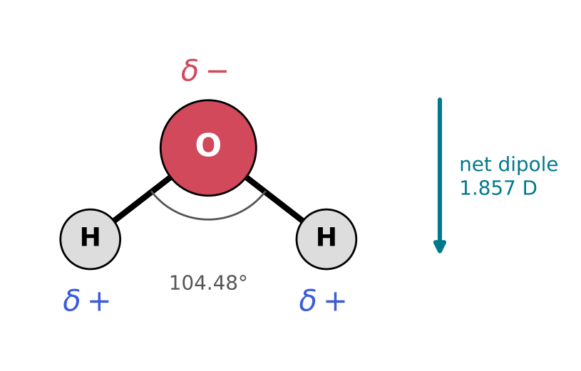
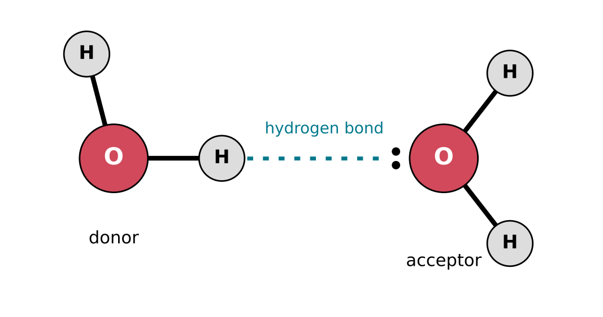
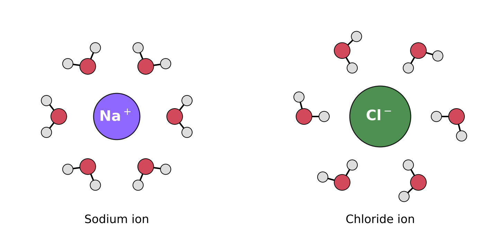

5 Polarity, Hydrogen Bonds and Water
The question of this chapter
Water and methane are molecules of almost the same mass. At room temperature methane is a gas that boils at −162 °C, whereas water is a liquid that boils only at 100 °C. Salt and sugar dissolve in water but not in oil. Ice floats. This chapter asks: what makes water so different, and what holds molecules together when no chemical bond joins them? The answer starts with a single property of atoms, electronegativity, and leads to the hydrogen bond, the interaction that holds the two strands of DNA together and gives RNA its shapes.
5.1 Unequal sharing
Electronegativity
In the hydrogen molecule, H2, the two atoms are identical and share their electron pair equally. When two different atoms are bonded, this is generally not so: one atom attracts the shared electrons more strongly than the other, and the electrons spend more time near it. The tendency of an atom in a bond to attract the shared electrons towards itself is called its electronegativity, often written with the Greek letter \(\chi\) (chi).
Electronegativity is not measured directly, like a mass. It is derived from measured bond energies by a procedure introduced by Linus Pauling in 1932 (Pauling 1932), and the values are pure numbers on what is called the Pauling scale. Table 5.1 gives the values for the elements of this book.
| Element | \(\chi\) (Pauling scale) | Element | \(\chi\) (Pauling scale) | |
|---|---|---|---|---|
| Hydrogen | 2.20 | Fluorine | 3.98 | |
| Carbon | 2.55 | Sodium | 0.93 | |
| Nitrogen | 3.04 | Magnesium | 1.31 | |
| Oxygen | 3.44 | Sulfur | 2.58 | |
| Phosphorus | 2.19 | Chlorine | 3.16 |
Two trends are visible. Across a row of the periodic table, electronegativity increases from left to right, as the nuclear charge increases while the valence electrons stay in the same shell. Down a column it decreases, because the valence electrons lie farther from the nucleus: phosphorus (2.19) is much less electronegative than nitrogen (3.04), although both have five valence electrons. Of the elements of life, oxygen and nitrogen are by far the most electronegative. Carbon, hydrogen and phosphorus lie close together, between 2.19 and 2.55.
Polar bonds
A covalent bond in which the electrons are shared unequally is a polar bond. Its more electronegative end carries a small excess of negative charge, and the other end a small deficit. These partial charges are written \(\delta\)− and \(\delta\)+ (\(\delta\), the Greek letter delta, is read “a fraction of”), to distinguish them from the whole-number charges of ions. The larger the difference in electronegativity, the more polar the bond. A C–H bond (difference 0.35) is nearly non-polar. An O–H bond (difference 1.24) is strongly polar, with the negative end on oxygen, and so are N–H, C=O and P–O bonds.
When the difference becomes very large, as between sodium (0.93) and chlorine (3.16), the electron is not shared at all but effectively transferred, and the result is a pair of ions (Chapter 3). Covalent and ionic bonds are therefore two ends of a continuous range. Non-polar covalent bonds lie at one end, ionic bonds at the other, and polar covalent bonds in between.
Polar molecules
A molecule as a whole is polar if the partial charges of its bonds do not cancel, so that one side of the molecule is slightly negative and the other slightly positive. Whether this happens depends on the shape of the molecule as well as on its bonds. A molecule with separated positive and negative charge is said to have a dipole, and the size of the separation is measured by its dipole moment, given in a unit called the debye (D).
Water is bent (Chapter 3), so the two O–H bond dipoles point partly in the same direction and add up: water has a dipole moment of 1.857 D, with its negative end at the oxygen atom (Figure 5.1). Ammonia, also not symmetric, has 1.476 D. Carbon dioxide, O=C=O, has two strongly polar C=O bonds, but the molecule is straight, so they point in exactly opposite directions and cancel; carbon dioxide has no dipole moment. Methane is also non-polar, because its four slightly polar C–H bonds point to the corners of a regular tetrahedron and cancel exactly (National Institute of Standards and Technology 2022).

5.2 Forces between molecules
Bonds within molecules and forces between them
Covalent bonds hold the atoms of a molecule together. Molecules also attract one another, but by much weaker intermolecular forces. These forces do not create new molecules, and at ordinary temperatures they are constantly broken and re-formed as the molecules move. They nevertheless decide whether a substance is a gas, a liquid or a solid at a given temperature, and whether it dissolves in water. All intermolecular forces are electrical in origin: they arise from the attraction between regions of positive and negative charge on neighbouring molecules.
Dipole-dipole and dispersion forces
Polar molecules attract each other because the positive end of one is drawn towards the negative end of another. This is a dipole-dipole interaction.
Non-polar molecules attract each other too, more weakly. The electron cloud of any molecule fluctuates, so that at any instant it may have a small, temporary dipole. That dipole distorts the electron cloud of a neighbouring molecule, creating a dipole in it, and the two temporary dipoles attract. This is the dispersion force, also called the London force. It acts between all molecules, and it is larger for larger molecules, which have more electrons. Dipole-dipole and dispersion forces, with related interactions, are together called van der Waals forces.
The hydrogen bond
One intermolecular interaction is of special importance for water and for the molecules of life. IUPAC defines it as follows: “The hydrogen bond is an attractive interaction between a hydrogen atom from a molecule or a molecular fragment X–H in which X is more electronegative than H, and an atom or a group of atoms in the same or a different molecule, in which there is evidence of bond formation” (Arunan et al. 2011).
In practice, a hydrogen bond forms when a hydrogen atom bonded to oxygen or nitrogen, and so carrying a \(\delta\)+ charge, points towards a lone pair on another oxygen or nitrogen atom (Figure 5.2). It is written X–H···Y, with the dotted line for the hydrogen bond. The group X–H is the hydrogen-bond donor, and the atom Y with its lone pair is the hydrogen-bond acceptor. Hydrogen bonds are stronger than other intermolecular forces, but much weaker than covalent bonds, so they are made and broken easily at ordinary temperatures. They are also directional: they are strongest when X, H and Y lie on a straight line (Arunan et al. 2011).

Hydrogen bonds are not limited to water. They form wherever O–H or N–H groups meet oxygen or nitrogen atoms with lone pairs: between molecules of alcohols, sugars and nucleobases, and between different parts of the same large molecule. The two strands of a DNA double helix are held together by hydrogen bonds between pairs of bases, and the same kind of pairing folds a single strand of RNA into a shape. Chapter 12 shows which atoms form these bonds.
Evidence from boiling points
When a liquid boils, its molecules separate from one another, so a higher boiling point indicates stronger intermolecular forces. Table 5.2 compares four small molecules containing hydrogen.
| Substance | Formula | Molar mass (g mol−1) | Normal boiling point (°C) |
|---|---|---|---|
| Methane | CH4 | 16.04 | −162 |
| Water | H2O | 18.02 | 100.02 |
| Hydrogen fluoride | HF | 20.01 | 19.6 |
| Hydrogen sulfide | H2S | 34.08 | −60.28 |
Methane and water have almost the same mass, yet water boils 262 °C higher. Methane is non-polar and forms no hydrogen bonds; water forms many, through its two O–H groups and its two lone pairs. Hydrogen sulfide, H2S, is nearly twice as heavy as water, but sulfur (2.58) is much less electronegative than oxygen (3.44), and H2S forms only weak hydrogen bonds; it boils 160 °C lower than water. Hydrogen fluoride, which contains the most electronegative element of all, also boils unusually high for its size.
5.3 Water, the solvent of life
A small molecule with four hydrogen-bonding sites
A water molecule is small, bent and polar. Its oxygen atom carries two lone pairs and is bonded to two hydrogen atoms, so each molecule can donate two hydrogen bonds and accept two. In liquid water, each molecule is linked to its neighbours by a network of hydrogen bonds that are constantly broken and re-formed. This network is responsible for the unusually high boiling point of water, and for most of its other unusual properties.
Solutions
A solution is a mixture in which one substance is spread evenly through another at the level of individual molecules or ions. The substance present in the larger amount, usually a liquid, is the solvent; the substance dissolved in it is the solute. A solution in which water is the solvent is an aqueous solution. The maximum amount of a solute that dissolves in a given amount of solvent at a given temperature is its solubility.
A useful rule of thumb is “like dissolves like”. Polar solutes dissolve in polar solvents, such as water, and non-polar solutes dissolve in non-polar solvents, such as oils. A molecule that can form hydrogen bonds with water, such as an alcohol, a sugar or a nucleobase, can take a place in the hydrogen-bond network of water and dissolves well. Table sugar dissolves in water in large amounts for this reason: each of its molecules carries eight O–H groups.
Dissolving ions
Water also dissolves many ionic compounds, such as sodium chloride, which do not dissolve in oils. Two properties of water are responsible.
First, water greatly weakens the electrical force between charges. The force between two charges in a medium is smaller than in a vacuum by a factor called the relative permittivity of the medium. For liquid water at 25 °C, the relative permittivity is 78.4 (International Association for the Properties of Water and Steam 2011): the attraction between a sodium ion and a chloride ion in water is almost eighty times weaker than at the same distance in a vacuum, and the ions can drift apart.
Second, water molecules arrange themselves around each dissolved ion, forming a hydration shell (Figure 5.3). Around a positive ion, such as Na+, the water molecules turn their \(\delta\)− oxygen atoms towards the ion; around a negative ion, such as Cl−, they turn their \(\delta\)+ hydrogen atoms towards it. The attraction between the ion and these oriented water molecules holds the ion in solution.

The hydrophobic effect
Non-polar molecules, such as the hydrocarbons of oil, dissolve poorly in water and tend to cluster together when placed in it; oil and water separate. This is the hydrophobic effect (from the Greek for “water-fearing”). It is not caused by a special attraction between the non-polar molecules. A non-polar molecule cannot form hydrogen bonds, and the water molecules around it are restricted in the hydrogen bonds they can form with one another. When the non-polar molecules cluster together, less of their surface touches water, and fewer water molecules are restricted. Polar and charged groups, which interact favourably with water, are called hydrophilic (“water-loving”); non-polar groups are hydrophobic.
Some molecules have a hydrophilic part and a hydrophobic part. Such molecules are called amphiphilic. Soap is an example: a long hydrocarbon tail attached to a charged head. In water, amphiphilic molecules arrange themselves with their tails together, away from the water, and their heads facing outwards. Depending on their shape, they form small spherical clusters or double layers that close into hollow spheres. The membranes that surround every living cell are such double layers, and similar structures formed from simple amphiphilic molecules are studied as possible compartments for the first cells.
Some unusual properties of water
The hydrogen-bond network gives water several properties that are unusual for so small a molecule.
- Ice floats. In ice, every water molecule forms four hydrogen bonds in a regular, open, tetrahedral arrangement, which occupies more space than the disordered liquid. At 0 °C and atmospheric pressure, ice has a density of 916.7 kg m−3 and liquid water 999.8 kg m−3 (Feistel and Wagner 2006; Wagner and Pruß 2002). Because ice is less dense, it floats, and bodies of water freeze from the top down, leaving liquid water beneath.
- Liquid water is densest at about 4 °C. As it cools below this temperature, the liquid begins to form open, ice-like arrangements and expands slightly. The maximum density, 999.97 kg m−3, is reached at 3.98 °C (Wagner and Pruß 2002).
- Water stores a lot of heat. Heating water requires energy to break hydrogen bonds as well as to make the molecules move faster. The energy needed to raise the temperature of 1 g of liquid water by 1 °C at 25 °C is 4.18 J (International Association for the Properties of Water and Steam 2011), several times more than for most common liquids and solids. Oceans and lakes therefore change temperature slowly.
Key points
- Electronegativity measures how strongly an atom in a bond attracts the shared electrons. On the Pauling scale: H 2.20, C 2.55, N 3.04, O 3.44, P 2.19. It increases across a period and decreases down a group.
- Unequal sharing makes a bond polar, with partial charges \(\delta\)+ and \(\delta\)−. O–H and N–H bonds are strongly polar; C–H bonds nearly non-polar.
- A molecule is polar if its bond dipoles do not cancel. Bent water (1.857 D) is polar; straight CO2 and symmetric CH4 are not.
- Intermolecular forces are much weaker than covalent bonds: dipole-dipole forces, dispersion forces and, strongest, hydrogen bonds.
- A hydrogen bond X–H···Y links a hydrogen on oxygen or nitrogen to a lone pair on another oxygen or nitrogen. It is directional and easily broken.
- Hydrogen bonding explains why water boils at 100 °C while methane, of similar mass, boils at −162 °C.
- Water dissolves polar molecules by hydrogen bonding and ions by weakening the force between them (relative permittivity 78.4) and forming hydration shells. Like dissolves like.
- Non-polar molecules cluster in water (the hydrophobic effect). Amphiphilic molecules form layers and membranes.
- Ice is less dense than liquid water and floats; liquid water is densest at 3.98 °C and has a high heat capacity.
Self-test
- Using Table 5.1, rank the bonds C–H, N–H, O–H and C–O from least to most polar, and mark the \(\delta\)− end of each.
- Carbon dioxide contains two polar bonds but is non-polar. Explain why, and say whether sulfur dioxide, which is bent, should be polar.
- Identify the hydrogen-bond donors and acceptors in a molecule of ammonia, NH3. Can two ammonia molecules form a hydrogen bond with each other?
- Explain why ethanol (CH3CH2OH) mixes with water in all proportions, whereas hexane (C6H14) does not dissolve in water.
- What would happen to lakes in winter if ice were denser than liquid water?